Primera propuesta
Esta propuesta propone una interfaz conocida para facilitar la búsqueda de profesor guía. El usuario puede buscar el nombre del profesor, a través de la barra de búsqueda y seleccionar su mención. Luego aparecen estos gráficos de torta que indican el procentaje de estudiantes aprobados según el profesor guía buscado, y filtrado según la mención. Además se añaden la calificación promedio de estos proyectos, palabras clave de estos y el ámbito destacado del profesor.
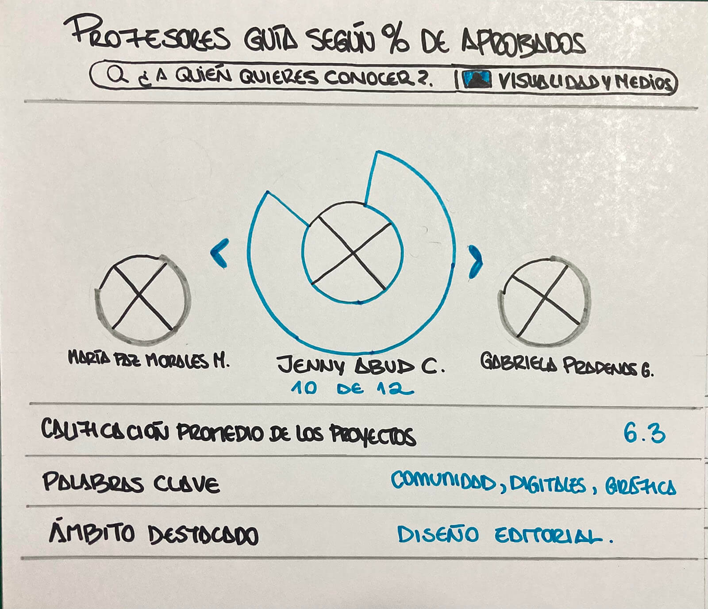
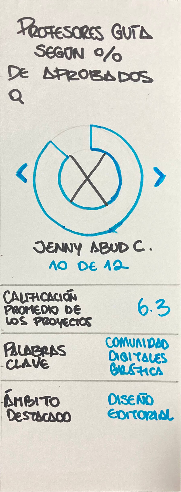
Segunda propuesta
Esta presenta filtros predeterminados dirigidos a estudiantes que no conocen bien los nombres de los profesores guías a escoger, por lo que su función sería introducirlos a ellos mediante un gráfico de líneas más general.
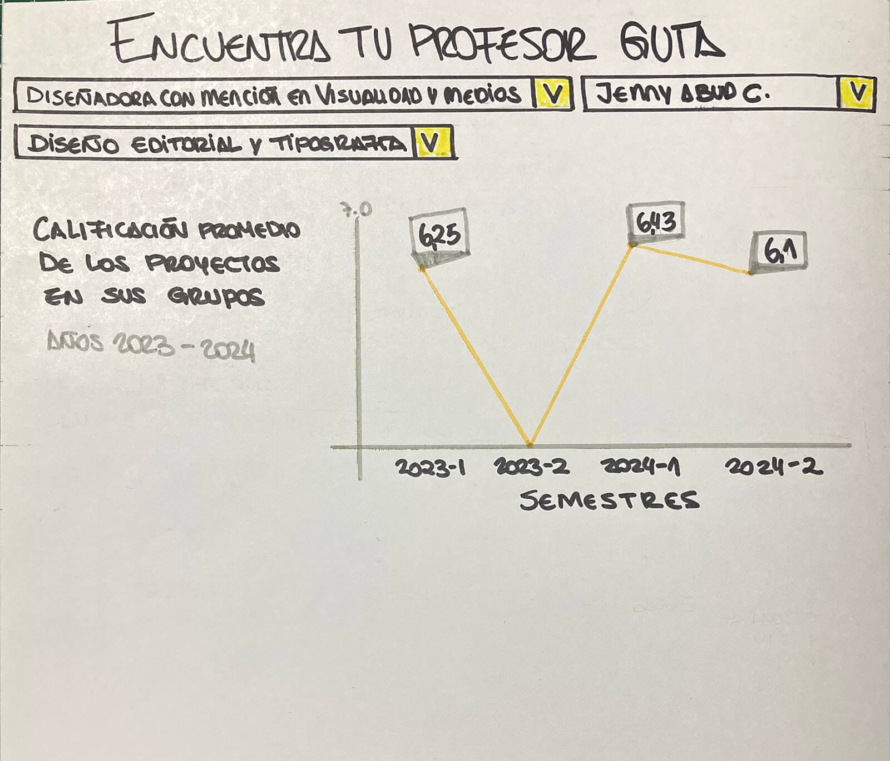
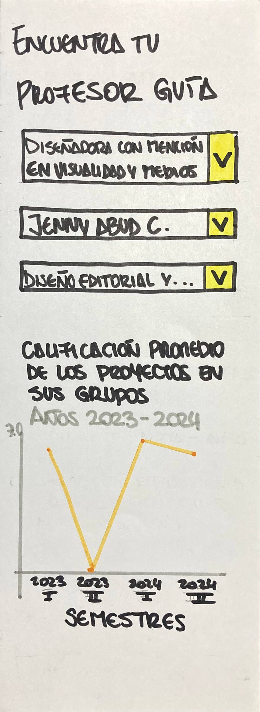
Tercera propuesta
Se utilizó el gráfico de matriz de puntos para evidenciar de forma rápida y fácil la cantidad de titulados y guiados por cada profesor. De esta manera se comprende sus valores teniendo en cuenta la proporción.
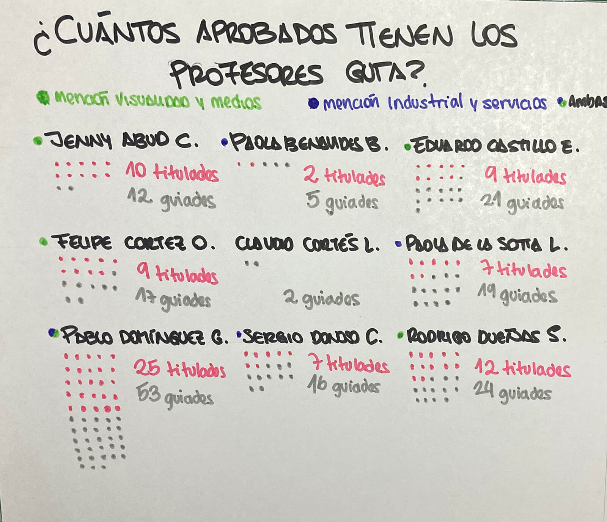
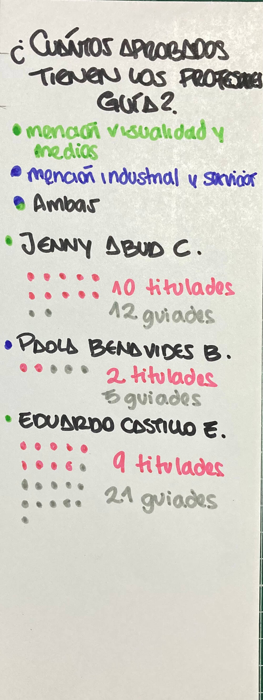
Cuarta propuesta
Inspirado por la gráfica de google trends, en esta propuesta se pone énfasis en las palabras clave de las investigaciones aprobadas, asociándolas con el profesor guía que más la repite. Conociendo de otra manera su enfoque.
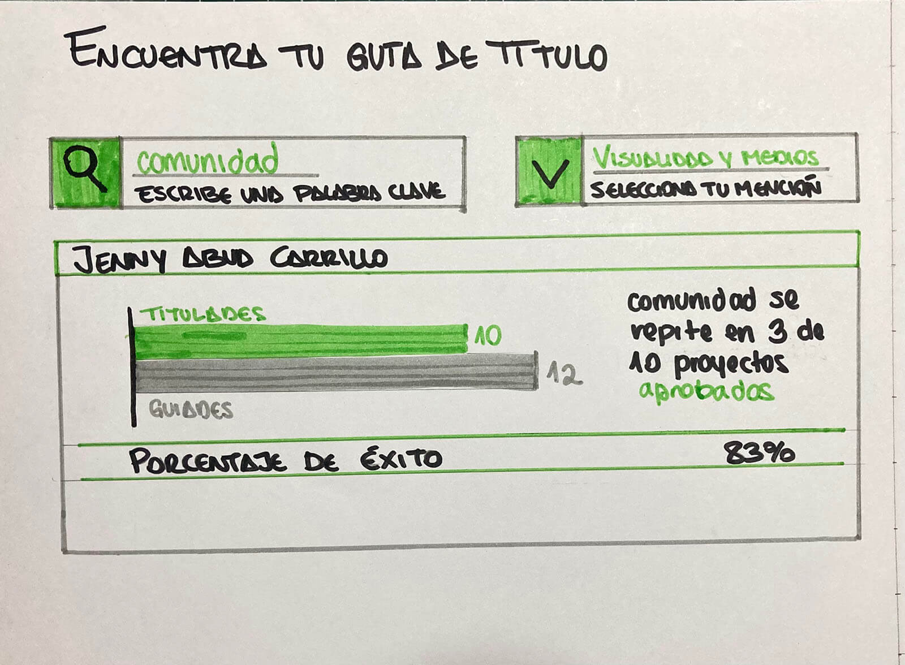
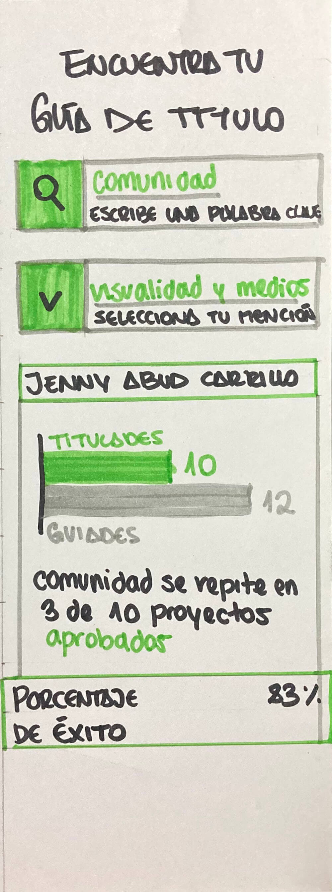
Quinta propuesta
A partir de las líneas de investigación propuestas por la página de la facultad esta propuesta las usa para categorizar a los profesores guía. Además, al mostrar los resultados se hace una comparativa con un gráfico de vanos, para que un lector interesado en una vista general, formule una respuesta a la pregunta de título.
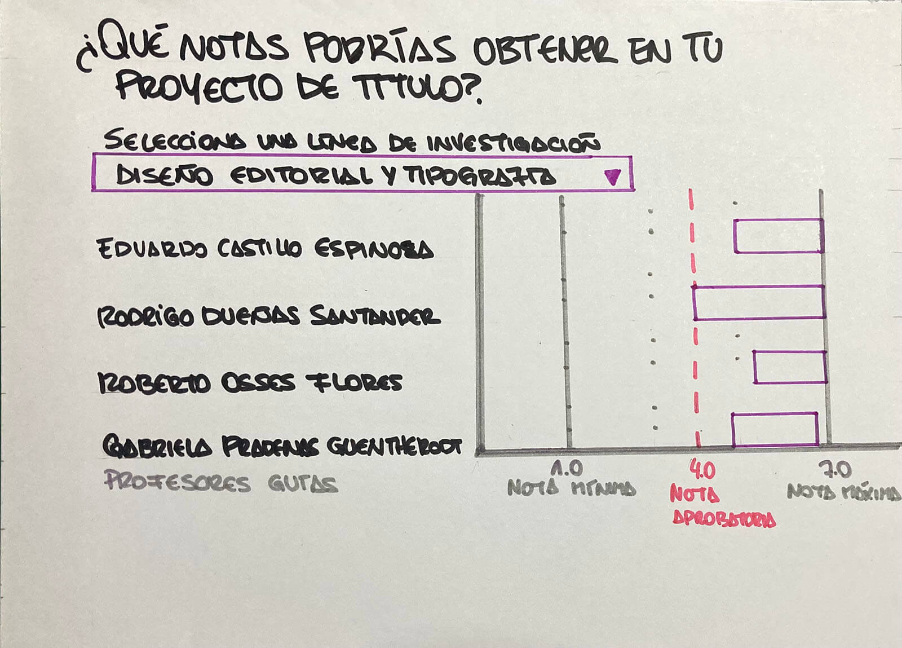
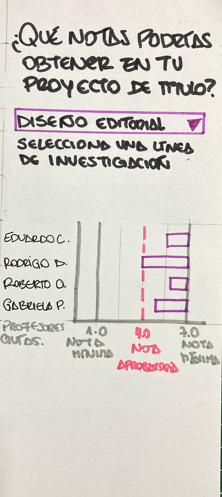
Sexta propuesta
Se propone centrar la atención en el rendimiento de los profesores en estos últimos años y a su quehacer como diseñadores, esto para que los estudiantes tengan una idea más concreta de quienes son. Para esto se incluye información de contexto y categorización según las líneas de investigación, por último se añade un link a sus portafolios como diseñadores.
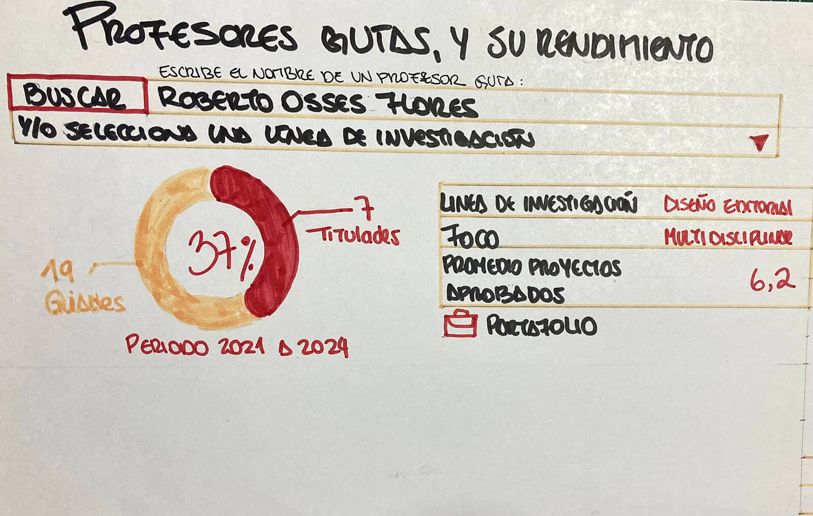
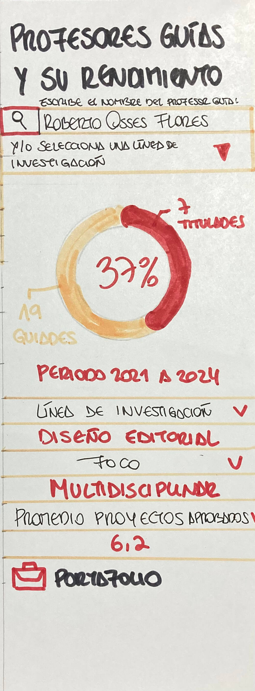